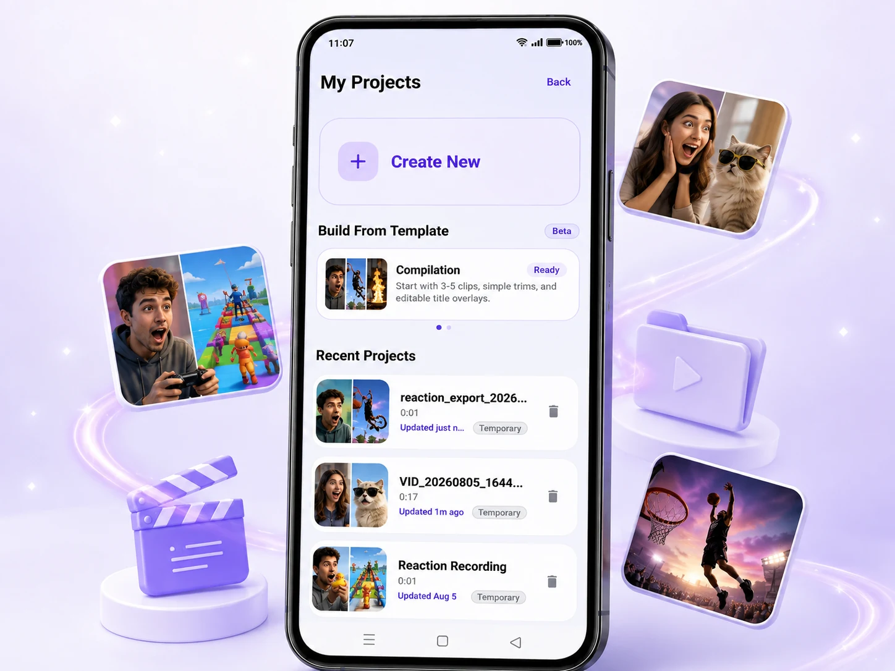
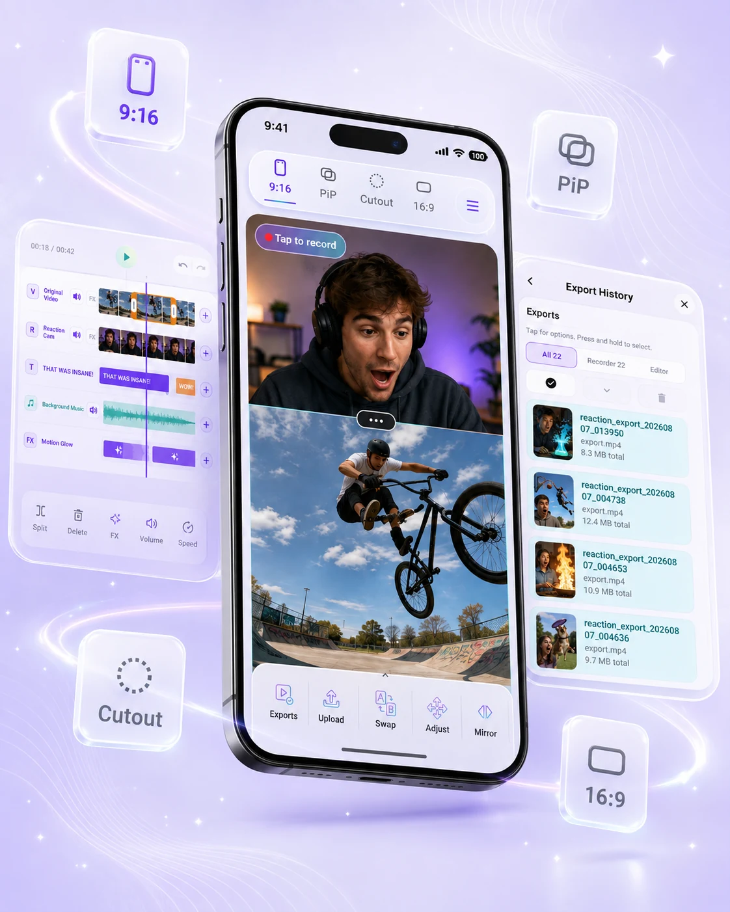
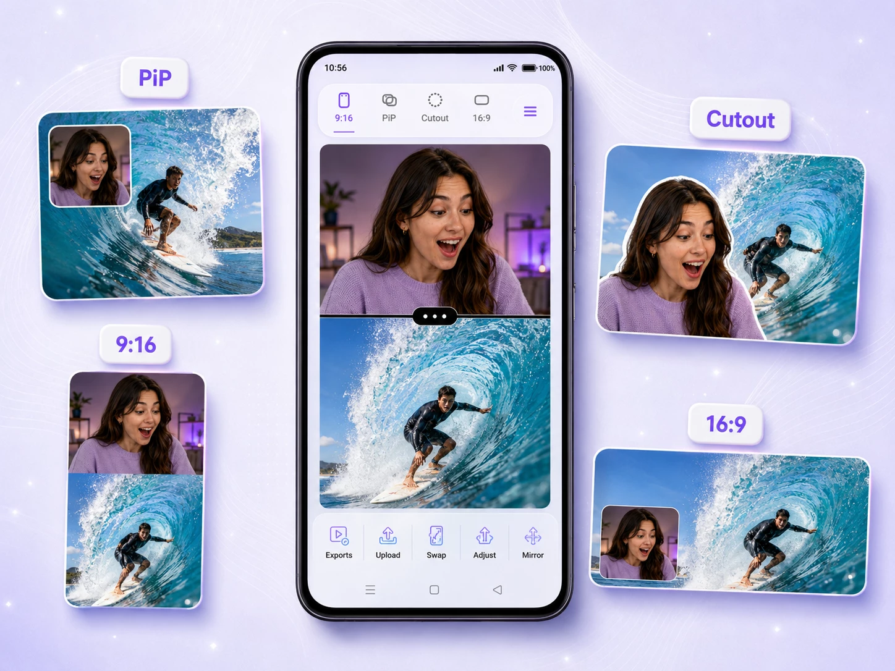
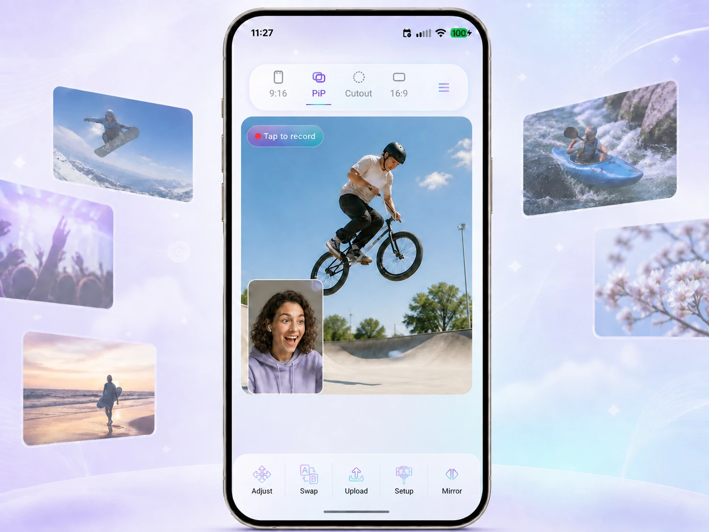
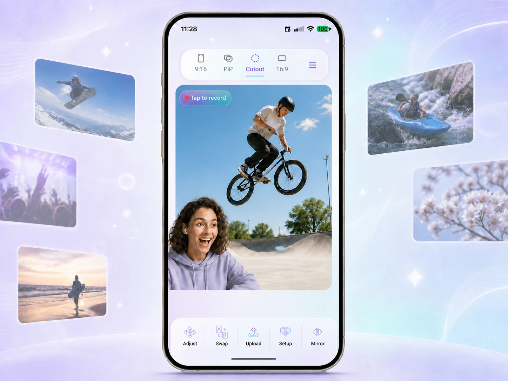
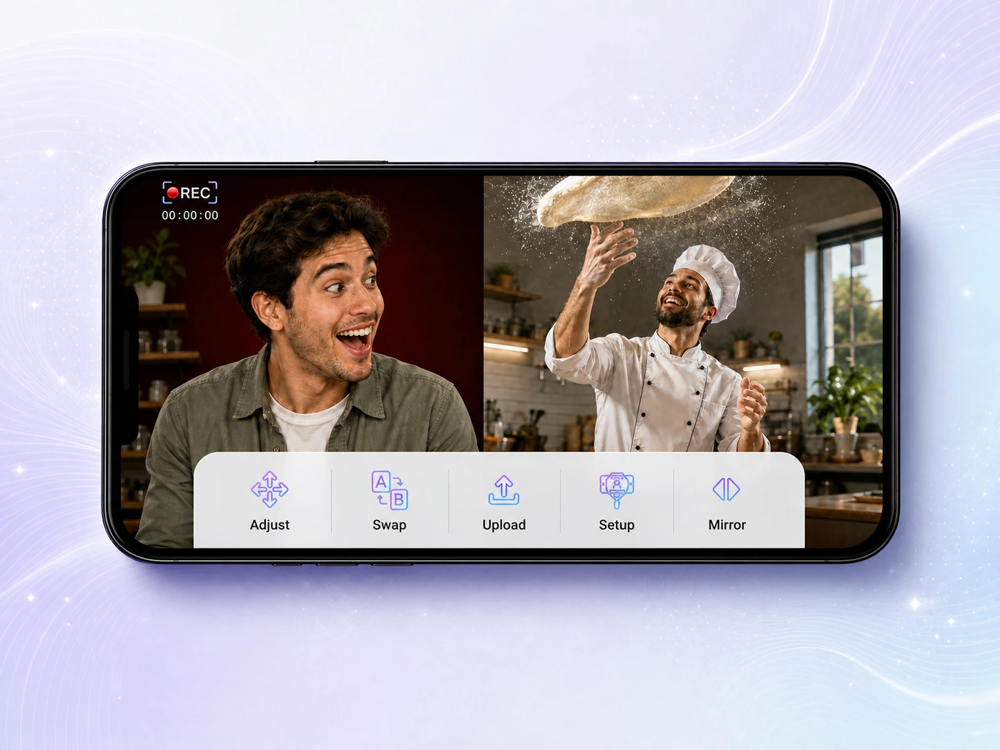
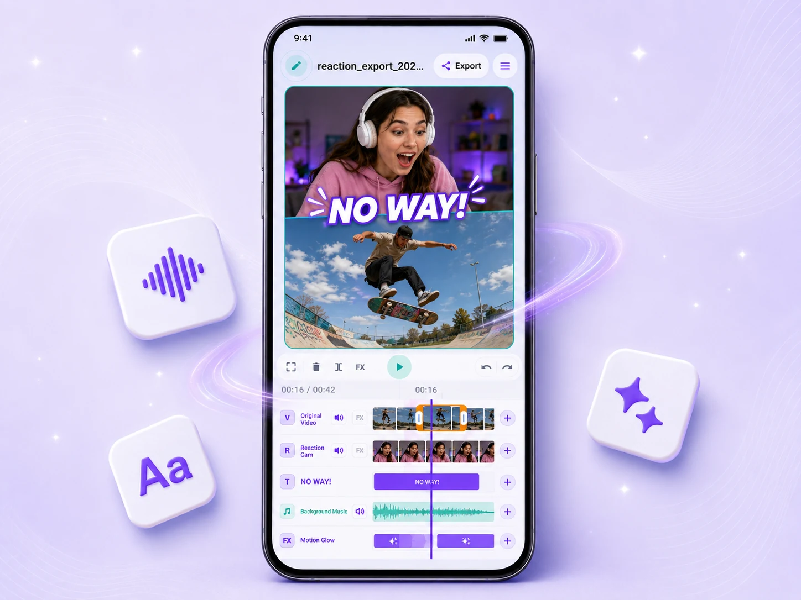
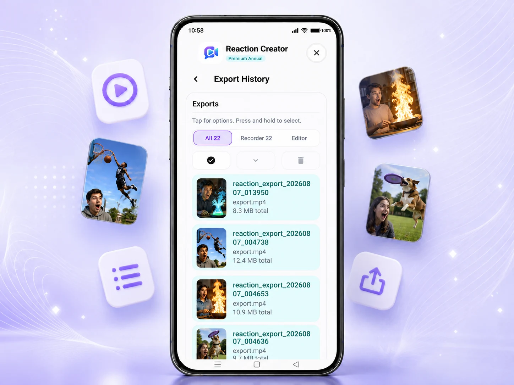
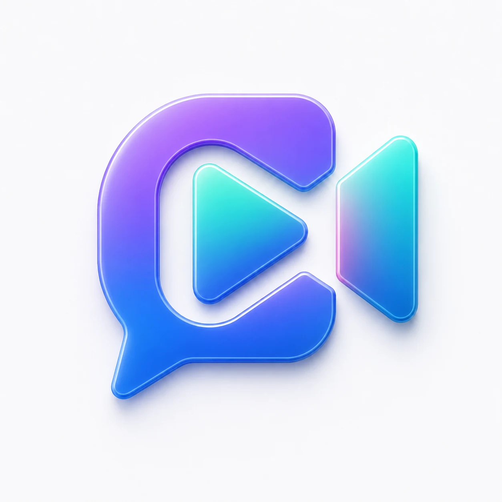

Projects
Create. Save. Continue.

Built for reaction creators
Choose the frame, add a video, record your take, and export. No editing timeline required.
Available for Android creators

Four ways to frame the moment
Simple by default
Reaction Creator keeps the recording workflow focused. Make the reaction first, then decide whether it needs anything else.
01 / Choose the frame
Start with the format your audience will see: vertical, picture in picture, Cutout, or landscape.

02 / Add the source
Add the video you want to react to, keep your chosen composition in view, and capture the take in one focused workflow.


A reaction-first layout
Cutout is a layout you can choose before recording. It removes the camera background so your reaction can sit directly over the source video.
Explore every layout16:9 / Made for wide moments
Choose 16:9 before recording to keep the source video and your reaction together in one landscape-ready frame.

Optional / Editor Mode
Export the take as recorded, or open Editor Mode when a video needs more polish. Trim the timing, add text, adjust audio, use effects, or refine a recent recording, saved project, or export.

Keep your momentum
Keep projects organized, return to unfinished reactions, and find completed exports without rebuilding your workflow.
Projects

Exports

Purpose-built
Choose 9:16, PiP, Cutout, or 16:9 before the take begins.
Finish and export without opening an editor when the take is already right.
Open Editor Mode only when you want to refine a recent recording, saved project, or export.
Your next reaction starts here
Start with the free plan and create your next reaction in one focused mobile workflow.
